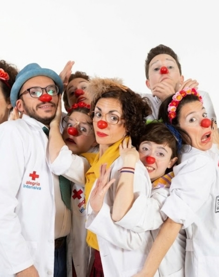

Te necesitamos para seguir llevando alegría y juegos a pacientes pediátricos
Para un niño, estar internado o atravesar un tratamiento médico puede ser un proceso difícil, lleno de incertidumbres y momentos desgastantes. Las paredes blancas y los aparatos médicos a menudo reemplazan su rutina diaria, sus juguetes y su espacio de juego. Sin embargo, cuando abrimos una puerta y entramos con un juego, un cuento o un par de risas, el entorno cambia por completo: la habitación vuelve a llenarse de color y los niños vuelven a ser lo que nunca debieron dejar de ser: niños. El juego no es solo entretenimiento; es medicina para el alma, una herramienta que reduce la ansiedad, brinda contención y les devuelve la fuerza para seguir adelante. Nuestra misión no puede detenerse, pero tampoco podemos hacerla solos. Necesitamos personas comprometidas, con empatía y ganas de transformar momentos amargos en recuerdos me llenos de luz.
SUMATE A LA CAMPAÑA